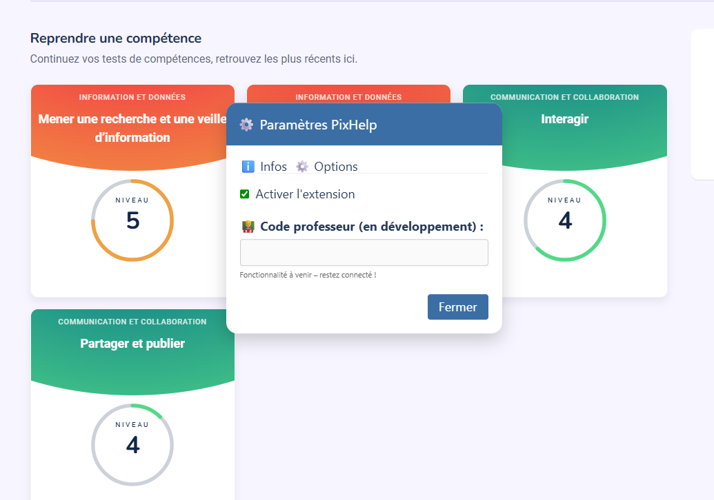
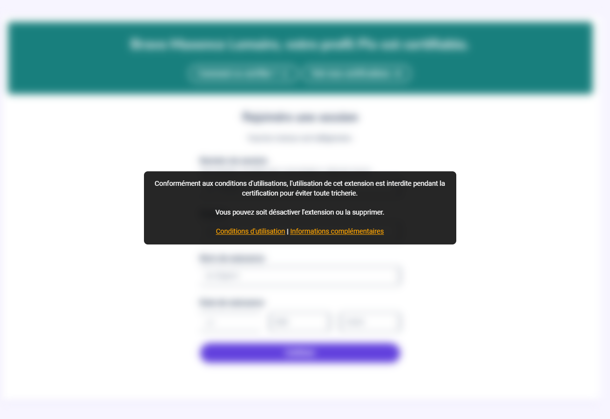

✅ Aide sur les questions
PixHelp vous aide à trouver les réponses aux questions de manière efficace.
PixHelp vous aide à trouver les réponses aux questions de manière efficace.

Activez ou désactivez l’extension en un clic. Interface simple avec onglets (Infos / Options).

Sur la page /certifications, la section est automatiquement floutée avec un message d’avertissement. L’extension se désactive automatiquement dans ce contexte.
chrome://extensions/ → activez le mode développeur → "Charger l’extension non empaquetée" et sélectionnez le dossier.about:debugging → "Ce Firefox" → "Charger un module complémentaire temporaire" → choisissez le fichier manifest.json.